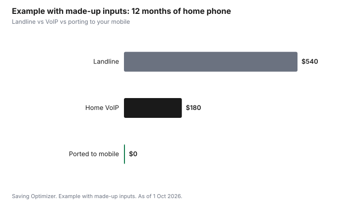

Technology · Canada
Cancelling a Landline in Canada and Keeping the Number: VoIP, Mobile Porting and 911
In Canada, you can usually cancel a landline and keep the number by porting it to a mobile or home VoIP service. Ask the new provider to transfer the number while the landline is still active; the old service ends when the port completes, so do not cancel first. Numbers can generally be kept within the same local exchange area. Before you switch, know the 911 differences: VoIP service may not work during a power or internet outage, and some VoIP services rely on the address you register.
Key takeaways
- Sign up with the new provider and ask it to port your number. Do not cancel the landline first.
- Numbers can generally be kept within the same local area; ask the new provider.
- VoIP 911: may fail in a power or internet outage; keep your registered address up to date.
- Check what else uses the line: alarm monitoring, medical alert devices, fax.
- Example with made-up inputs: $45 landline vs $15 VoIP saves $360 a year.
Your options
| Option | How it works | Watch for |
|---|---|---|
| Port to your mobile | The number moves to a cell phone | You lose a separate home line; check plan cost |
| Home VoIP from your internet provider | Phone service over your internet connection | Works only when internet and power are on |
| Independent VoIP service | An adapter or app over your internet | 911 address registration; outages; device setup |
| Keep a basic landline | Downgrade features | Ask about lower-cost plans |
911 on VoIP
The CRTC requires local VoIP providers to offer 911 access, but it works differently from a traditional landline. Fixed VoIP tied to your address can send your location to 911, while nomadic VoIP (usable anywhere with internet) may connect you to a 911 operator who needs to ask your location, using the address you registered. VoIP may not work during power or internet outages. Keep a charged mobile phone handy and update your registered address when you move.
Before you cancel
- Alarm and medical alert systems may need a landline or a cellular or internet module; ask the company.
- Older relatives may rely on the landline; check they are comfortable with the new set-up.
- Bundles: removing home phone can change your internet or TV bundle price.
- Contracts: check for any term or cancellation rules.
Step by step: porting a landline number
- Get your current account number, the name on the account and the service address exactly as shown on your landline bill.
- Choose the new service: your mobile plan, a VoIP service from your internet provider, or an independent VoIP service.
- Ask the new provider whether it can port your number from your area. Numbers can generally be moved only within the same local exchange area.
- Sign up and request the port. Do not cancel the landline; the old service ends when the port completes.
- Set up the new service: voicemail, caller ID, and for VoIP, your registered 911 address.
- Test incoming and outgoing calls, voicemail and caller ID.
- Check your final landline bill and return any rented equipment.
911 differences in detail
| Service | Location sent to 911 | Watch for |
|---|---|---|
| Traditional landline | The address tied to the line | Works in many power outages with a corded phone |
| Fixed VoIP | Address of the service, when properly registered | Needs power and internet |
| Nomadic VoIP | Registered address; the operator may confirm your location | Update the address when you move or travel |
| Mobile phone | Network location information | Coverage and battery |
Do not test 911 by calling it. Ask your provider how to confirm your registered address. Keep a charged mobile phone as a backup during outages, and consider a battery backup for your modem if you rely on VoIP.
Devices that use the line
- Monitored alarm systems may need a cellular communicator or an internet module; the alarm company can switch it, sometimes for a fee.
- Medical alert pendants often dial out over a landline; many now have cellular versions.
- Fax machines may not work well over some VoIP services.
- TTY devices: ask the new provider about support, and about text with 911 if you are deaf, hard of hearing or speech-impaired.
Is a landline still worth keeping?
A landline can still make sense in a few situations: where mobile coverage inside the home is weak, for someone who relies on a corded phone during power outages, or where an alarm or medical device needs it and no alternative suits. Otherwise, many households already pay for a mobile line for each adult, and the landline duplicates it. If you keep it, ask the provider for its most basic plan and drop features you do not use, such as long-distance packages.
Common mistakes
- Cancelling first and losing the number.
- Forgetting the alarm or medical alert system until it fails a test.
- Moving the number to VoIP without registering the 911 address.
- Assuming a bundle discount survives; dropping home phone can raise the internet price.
- Porting to a provider that cannot take numbers from your exchange.
Example with made-up inputs: annual cost
These numbers are an example with made-up inputs, not current prices.
| Option | Monthly | 12 months |
|---|---|---|
| Landline | $45 | $540 |
| Home VoIP | $15 | $180 |
| Ported to existing mobile | $0 extra | $0 |

Sources
- CRTC, 9-1-1 services for wireline, VoIP and wireless phones, as of 1 Oct 2026. VoIP 911 obligations, registered address, and outage limits.
- CRTC, switching providers and keeping your number, as of 1 Oct 2026. Ask the new provider to transfer the number; keep the old service active.
- The prices in the example table and chart are made-up inputs.
Frequently asked questions
Can I keep my landline number if I cancel?
Usually yes. Port it to a mobile or VoIP provider while the landline is still active. The new provider starts the transfer.
Should I cancel my landline before porting?
No. Cancelling first can lose the number. The old service ends when the port completes.
Does 911 work on VoIP in Canada?
Local VoIP providers must offer 911 access, but it may not work during power or internet outages, and some services rely on the address you register.
Can I move my number to a different city?
Numbers can generally be kept only within the same local exchange area. Ask the new provider.
What about my home alarm?
Some alarm and medical alert systems use the landline. Ask the company about cellular or internet options before cancelling.
How do I test 911 on a new phone service?
Do not call 911 to test it. Ask your provider how to confirm your registered 911 address.
Will my home alarm work without a landline?
Many alarms can switch to a cellular or internet communicator. Ask the alarm company before you cancel.
Is it worth keeping a landline?
It can be where mobile coverage at home is weak, for someone who relies on a corded phone in outages, or for a device that needs it. Otherwise a mobile line often duplicates it.
Can I move my landline number to my cell phone?
Usually, if the number stays in the same local exchange area. Ask your mobile provider to port it while the landline is still active.
Researched and drafted with AI assistance and fact-checked against official Canadian sources. How we create content.
Disclosure: Providers are described as offer types; none is named or ranked. The CRTC is named as a regulator, not a partner. Saving Optimizer may earn a commission if a partner link is added later; no partnership is claimed. Education only.